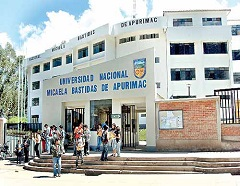

Elecciones Universitarias
 Realizacion de eleciones universitariasRespecto a cómo realizar dichas elecciones, el undécimo párrafo indica: “Aprobado el Estatuto de la universidad y el referido cronograma, la asamblea estatutaria asume transitoriamente las funciones de la Asamblea Universitaria hasta la elección de las nuevas autoridades. El proceso de elección de nuevas autoridades es realizado por el Comité Electoral constituido conforme a lo establecido por la presente Ley, y comprende la elección del Rector, del Vicerrector y de los Decanos, reconstituyéndose así la Asamblea Universitaria, el Consejo Universitario y los Consejos de Facultad”.
HISTORIA
En la última elección estudiantil para la Federación Universitaria, hubo problemas porque algunos alumnos de las sub-sedes no pudieron participar debido a la distancia en que se encontraban.
Deciden contratarlo a Ud. Para que pueda resolver el problema, diseñando un sitio web que permita subir los resultados obtenidos por cada lista en la sede central y en cada sub-sede. Después de cargar los archivos debe procesarlos y dar los resultados finales con la lista ganadora, y si ninguno de ellos supera el 50%+1, entonces mostrar el mensaje que habrá “segunda vuelta” en caso que haya dos o más listas. Si hay solo una lista, entonces, se declara las elecciones como “Anulado”.
PROFECIONAL
Estudiante de Ingenieria Informatica y sistemas de la unamaba, esta desarrollando un software para mejorar las elecciones universitarias en la UNAMBA en el curso de desarrollo de software